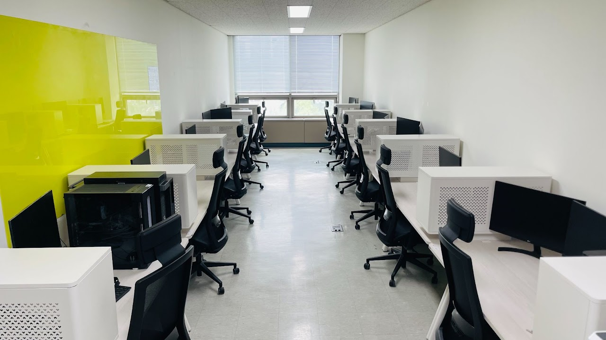

[Funding]
ANALOG × MIXED-SIGNAL × INTEGRATED CIRCUITS
AMPLIA LabINHA UNIVERSITY
Self-motivated students to study and research cutting-edge analog and mixed-signal ICs in AMPLIA are encouraged to contact professor.
01LATEST NEWS
[Research]
Three KR patents about “Analog PIM” has been applied (정현수, 최석준, 이강재, 유경석, 김동환).
Research[Research]
Paper about “Event-Driven TDC” has been accepted to IEEE TVLSI (김진하, 김세연).
Research[Funding]
New research grant: “차세대 PIM 향 데이터 변환 회로 구조 연구 (IITP)”.
Funding[Research]
Paper about “SAR-Based Extended Counting ΔΣ ADC” has been accepted to IEEE ISCAS.
Research[Research]
Paper about “High Speed Digital LDO” has been accepted to IEEE TPEL (심상웅).
Research[Research]
Paper about “WDR CIS” has been accepted to Sensors (심상웅).
Research[Award]
KCS: 반도체특성화 반도체프로젝트 최우수상 (이강재, 김동환).
Award[Research]
Paper about “Weighted Chopping” has been accepted to EL (한우솔, 심건희).
Research[Funding]
New research grant: “초고정밀 센서 인터페이스 집적회로 구현 (ITP)”.
Funding[Award]
Semiconductor Engineering Society Scholarship Award (김동환).
Award[Award]
Two Best Paper Awards at IEEE/IEIE ICCE-Asia (박성호, 이강재).
AwardMORE↗
02
RESEARCH INTERESTS: From silicon to system
Analog and mixed-signal IC design for intelligent sensing systems.

We design ASICs for the interfaces where the physical and digital worlds meet. Our work spans high-precision sensing, data conversion, high speed power management, and in-memory computing.
ON-GOING PROJECTS
- [NRF] 차량용 고신뢰 고속 인터페이스 IP 기술 개발 from Jul. 2026
- [IITP] 차세대 PIM 향 데이터 변환 회로 구조 연구 from Apr. 2026
- [KIAT] 미래형자동차 핵심기술 전문인력양성사업 from Mar. 2024
- [NRF] 멤리스터 크로스바 어레이 기반 프로그래밍가능 임계 논리회로 구현 (신개념 PIM 기초) from Mar. 2024
- [KEIT] 운전자감시 시스템용 고감도 글로벌 셔터 이미지 센서 기술개발 from Jul. 2024
- [NRF] BK21 지능형 반도체: 칩렛 기반 차세대 반도체 구현 from Mar. 2024
- [IITP] 인공지능 시스템 반도체 연구센터 (ITRC) from Jan. 2025
- [민간] 넓은 인지 범위를 가지는 범용 센서 인터페이스 from Jan. 2025
MORE↗
COMPLETED PROJECTS
- [ITP] 초고정밀 센서 인터페이스 집적회로 구현
- [BRIDGE+] 넓은 인지 범위를 가지는 신개념 고정밀 센서 인터페이스 기술
- [민간] 계측기용 고정밀 데이터 컨버터 집적회로 연구개발
- [IITP] 차세대 웨어러블 디바이스용 저전력·저면적 모바일 AP를 위한 높은 안정성을 가지는 하이브리드 선형 레귤레이터 연구
- [IITP] 아날로그 회로 기반 고효율 차세대 인공지능 가속기 연구
- [WISET] HDR Imager 향 저전력 저잡음 비교기 어레이 구조 연구
- [NRF] 인공지능 반도체 융합전문 인력육성 센터
03
PEOPLE
PRINCIPAL INVESTIGATOR
Jaehoon Jun, Ph.D.
Professor, Department of Electrical and Electronic Engineering, Inha University
04
PUBLICATIONS

05
CONTACT
Room 317, Hightech Center, Inha University,
100 Inha-Ro, Michuhol-gu, Incheon 22212,
Republic of Korea
Room 629 and Room 331,
Hightech Center